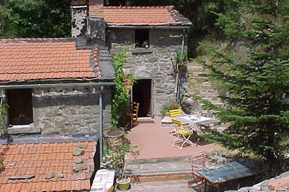

Accomodation
There are 3 self-catering houses, single and doublerooms for travellers available:
Valentina Calzolaio, Paneteria and Sartoria have 2 bedrooms, a kitchen and bathroom each.
Internet access with usb-key.
Make your stay unforgetable: Sleep in the traditional shepard´s card now available!
New in 2011: Natural swimmpond with oekological plant water purification
Valentina Paneteria and Sartoria have open fireplaces and woodstoves for the cold season.
Water comes from the 50m deep well or from the spring on the mountain above with high drinking water quality.
Casa Valentina is surrounded by huge chestnut and oak forests and meadows with a wide variety of fruit trees, such as fig, walnut, olives and cherry.
There is a small shop-cum-bar and restaurant in the village of Portole about 4 km away and also in Teverina in the other direction.


- 

Tuscany awaits you!
Enjoy with us the traditional landscape of vineyards, cypress trees, olive groves and huge oak forests
Close to Lake Trasimeno lies the charming etruscan town of Cortona. It is a good alternative for anyone wanting a break or a bit more Peace than Party.
You can discover the area by hiking, on mountain bikes, on horseback or with our sailboat at Lake Trasimeno.